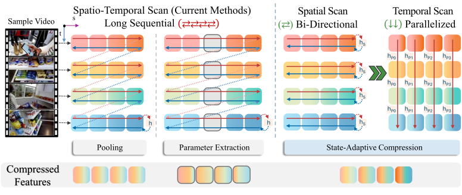
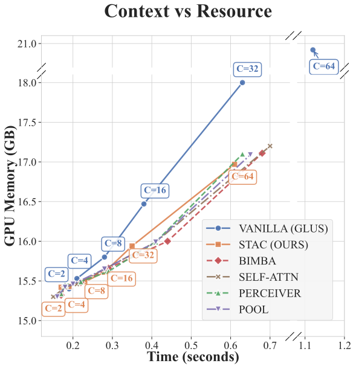
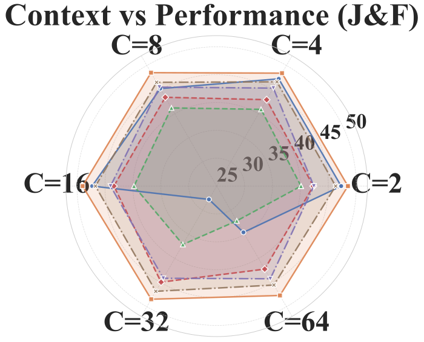
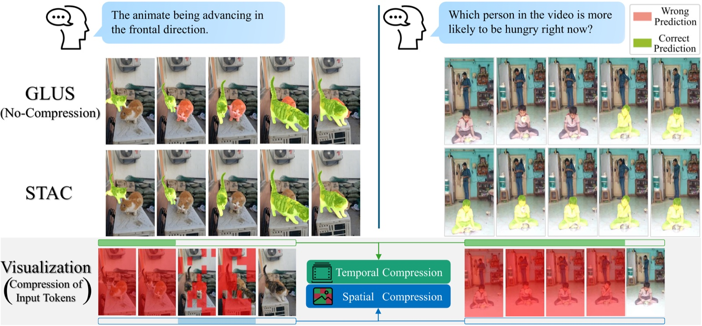

Abstract
Video reasoning segmentation demands pixel-accurate object tracking across hundreds of frames under complex natural language queries, producing dense spatiotemporal tokens whose quadratic self-attention cost makes long-video processing prohibitive. Existing methods address this through token compression, yet typically operate on encoder features lacking temporal context, constraining selection before content redundancy can be reliably assessed. Informed compression requires contextual awareness, but acquiring that awareness at full resolution incurs the same quadratic cost compression aims to reduce. State-space models resolve this constraint, as their linear recurrence selectively conditions each token on temporal context at O(T) cost, producing representations where content redundancy becomes assessable. Building on this, Selective SpatioTemporal Aggregation and Compression (STAC) enriches features via decoupled bidirectional spatial and causal temporal scanning, leveraging recurrence-derived redundancy for hierarchical compression with adaptive thresholds optimised with segmentation objective. STAC achieves 85% token reduction and 1.8× speedup while surpassing compression-free baselines on reasoning segmentation benchmarks in a zero-shot streaming-compatible setting.
Highlights
State-informed Spatiotemporal Aggregator
Enriches encoder features through decoupled bidirectional spatial and causal temporal scanning, producing a semantically grounded feature space where redundancy becomes discernible before compression — with streaming deployment supported by the causal temporal design.
Hierarchical State-adaptive Compression
Performs temporal-then-spatial token reduction in the recurrence-enriched feature space, with adaptive thresholds that respond to local content dynamics: static regions are compressed aggressively while motion boundaries are preserved.
Task-Grounded Differentiable Compression
Propagates segmentation gradients directly through discrete compression decisions via straight-through estimation, aligning token retention with downstream mask accuracy and transferring zero-shot to unseen reasoning benchmarks.
Method
Spatial relationships within a frame are non-causal — objects interact with all of their neighbours simultaneously — whereas temporal evolution follows a strictly causal progression. STAC therefore decouples the two: bidirectional scanning aggregates spatial context within each frame, while a causal temporal scan accumulates history across frames at linear cost. Because the recurrence has already absorbed redundant content by the time compression happens, near-identical enriched representations directly signal what can be merged, and adaptive thresholds trained with the segmentation loss decide what is kept.

Decoupled scanning. Bidirectional spatial scans respect the non-causal structure within frames; the causal temporal scan never looks at future frames, which is what makes STAC deployable in a streaming setting.
Results
STAC is trained only on the referring benchmarks MeViS and Refer-YouTube-VOS, and evaluated zero-shot on Ref-DAVIS17 and the reasoning benchmarks ReVOS and ReasonVOS. Across context lengths it surpasses compression-free baselines while processing a fraction of the tokens, and the margin grows as videos get longer — exactly the regime dense attention cannot afford.


Context scaling. Left: compute cost (GPU memory vs. runtime) as temporal context grows — STAC stays in the low-cost corner where dense baselines blow up. Right: J&F across context lengths C=2–64 — STAC (orange) encloses all competing methods.
Qualitative Results

Frame-level comparison. Qualitative comparison against prior methods on reasoning queries; STAC produces cleaner, temporally stable masks despite discarding ~85% of the tokens.
The clips below compare STAC against GLUS in motion. The Compressed panel visualizes STAC's compression dynamics: a red overlay marks patches being sequentially aggregated, with deeper red indicating heavier aggregation and a colour refresh marking each summary update.
BibTeX
@inproceedings{hesham2026stac,
title = {{STAC}: Selective Spatiotemporal Aggregation and Compression for Video Reasoning Segmentation},
author = {Hesham, Syed Ariff Syed and Liu, Yun and Sun, Guolei and Yang, Jing and Ding, Henghui and Geng, Xue and Jiang, Xudong},
booktitle = {European Conference on Computer Vision (ECCV)},
year = {2026}
}
Acknowledgements
This research work is supported by the Natural Science Foundation of China (No. 62576176), the Agency for Science, Technology and Research (A*STAR) under its MTC Programmatic Funds (Grant No. M23L7b0021) and the A*STAR Graduate Scholarship. The computational resources are supported by the Supercomputing Center of Nankai University (NKSC).